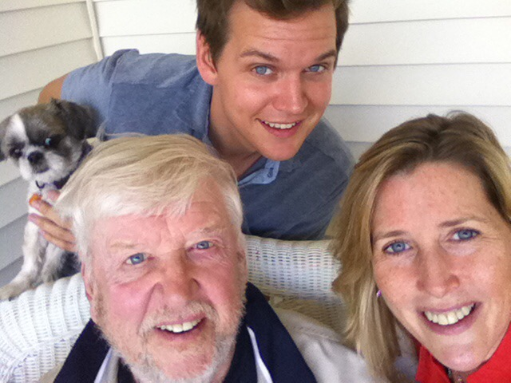

Affectionately known as “Mac”
A sportswriter and editor before embarking on a sports television career that included stops at three networks, Mac's career spanned 45-years. He was married and divorced twice and had five children including one girl. His last relationship was his longest, lasting 25 years. He attributed its longevity to not being married. His philosophy was that once people were married they treated the relationship like an old shoe and told his children to avoid it. Needless to say Mac's family life was complicated.
Passionate about music, sports, the arts and running he had many interests to keep him busy once he retired and moved to Florida.
